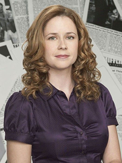

Michael Gary Scott
The best qoutes of Micahel Scott
"You miss 100% of the shots you don't take. - Wayne Gretzky” - Michael Scott"
“Do you tink that smoking drugs is cool? Do you think that doing alcohol is cool?”
“I would not miss it for the world. But if somethig else came up I would definitely not go.”
“Sometimes I start a sentence and I don't even know where it's going. I just hope I find it along the way.”
“Occasionally, I'll hit somebody with my car. So sue me”
“You known what they say, 'fool me once, strike one, but fool me twice...strike three'”
“Would I rather be feared or loved? Um... Easy, both. I want people to be afraid of how much they love me.”
“Society teaches us that having feelings and crying is bad and wrong. Well that's baloney, because grief isn't wrong. There's such a thing as good grief. Just ask Charlie Brown.”
Dwight Kurt Schrute
The best qoutes of Dwight
“I am fast. To give you a reference point I am somewhere between a snake and a mongoose… And a panther.”
“I signed up for Second Life about a year ago. Back then, my life was so great that I literally wanted a second one. Absolutely everything was the same…except I could fly.”
“Why are all these people here? There are too many people on this earth. We need a new plague.”
“You couldn’t handle my undivided attention.”
“Reject a woman, and she will never let it go. One of the many defects of their kind. Also, weak arms.”
“In the wild, there is no healthcare. Healthcare is “Oh, I broke my leg!” A lion comes and eats you, you’re dead. Well, I’m not dead, I’m the lion, you’re dead!”
James Duncan "Jim" Halpert
The best qoutes of Jim
“By two o'clock Dwight will choose himself to be the assistant to his own assistant, me.”
“I don't understand the desire to push sweet potato fries on me. I just want regular fries.”
“I did not love the dialogue. Or the character. I took the role to impress the receptionist who will remain nameless.”
“If I can make mushed carrots seem better than a boob, I can pretty much sell anything.”
“And for my next trick, I will make my career disappear.”
“Jan is about to have a baby with a sperm donor. And Michael is preparing for the birth of a watermelon with Dwight. Now, this baby will be related to Michael through delusion.”
Pamela Morgan "Pam" Beesly-Halpert
The best qoutes of Pam
“You can't be scared of a room full of Jims. I love the guy but he's basically Gumby with hair.”
“Oscar and the warehouse guy! Go Oscar! Go gay warehouse guy!”
“I can tell Michael's mood by which comedy routine he chooses to do, the more infantile, the more upset he is. And he just skipped the Ace Ventura talking butt thing. He never skips it. This is bad.”
“When Michael's skirting a phone call, he gave me a list of places to say he is. 'Stopping a fight in the parking lot.' 'An Obama fashion show.' Whatever... that is. Or 'trapped in an oil painting.' I'm gonna save that one.”
“I hate the idea that someone out there hates me. I even hate thinking that Al-Qaeda hates me. I think if they got to know me, they wouldn't hate me. But Karen knows me, and she still hates me, so...”
“Well, ya know, Michael is a great delegator. He never does any work himself. Ever. And one time, I walked in on him naked, and his thing is so small. If it were an iPod it would be a shuffle!”
“I don't care what they say, I just want to eat. Which I realize is a lot to ask for... at a dinner party.”
“Kinda sounds like prison is better than Dunder Mifflin.”